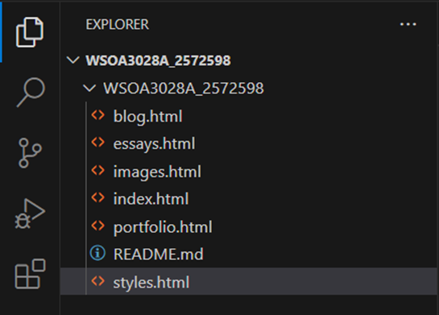

Blog Post - Week Two
This is weeks blog post will be discussing and showing my folder structure and URL scheme. It will also outline my decision making in my layout
Folder Structure
At first, I was a bit confused about this section but after the lesson last Thursday, I understood the structure of the pages.Based on the idea of how I want my website to look, my folder structure will consist of pages that people can access that open up different parts of the website.
I found that at the end of the set up, it made a lot of sense as to how to edit and keep track of your webpage. Shortly after that, I began exploring and fiddling with GitHub and the code. With a person that has no experience of HTML, I understand parts of the code already and the structure of it which may be thanks to learning C# last year but also the use of the readings from last week, beginning with the "World Wide Web".
Root Folder
Index.html: This will act as the homepage. The homepage will contain the information about my website and show information about each page that the website contains. It will also offer insight about myself and contain a profile page.
Blog.html: This page will contain all the information about my weekly blog posts and the files. The structure of this folder will contain the blog posts divided into it weeks and I'm potentially thinking of making each week's blog post as a button where the user will click onto it to open and read more.
Portfolio.html: this will contain my information about my artworks and all my portfolio pieces which I will break down from my artworks, to school animation pieces as well as other forms of games I have created.
Design.html: this page will show my design process of my website which will display the wireframe designs and explanations for each page.
Essays.html: this page will display all the essays done for the course and maybe other forms of academic research.
Profile.hmtl: this page is my profile page. This is where you can read more about me, view my curriculm vitae and learn more about my life and background.
Below is an example of my current folder structure
I do understand that this is not the final version and with more understanding about folder structures, I will correct this in later stages of my design process
Url Scheme
In this section, I didn't understand it much until after the lecture which also required me to do some research but from what I've also learnt from the reading, I will be using an HTTP (Hypertext Transfer Protocol). This is much easier with it being a basic layout and I want to make sure my web directory is organized. The reason as to why I also chose this is because of transferring information.
Wireframes and Designs
My wireframes and designs can be found in the design page This will have more detailed explanations and layouts of my design structure.
Reflection on Moulthrop, S (2003) Reading
I felt like this was a reading that took me a while to understand and grasp key concepts that I could try apply to the design and understanding of my website. I felt the part that I actually understood very well was the discussion on hypertext which I could relate with Week 1's blog post regarding The World Wide Web. In this reading, Moulthrop discusses the study of hypertext and how it can connect with issues like online censorship, digital privacy etc.
Furthermore, he also highlights that user-generated content and participatory culture mirrors discussions on media democratization and citizen journalism in the social media era. From this, I noticed he highlighted and emphasized the points of:
The web of today functions as a hypertext system. Within the structure of hypertext, we see that instant messaging is a resemblance of hypertext
Reflection On Interaction and the WWW
When I think of interaction, I think of the exchange of information between two bodies or systems. So in the context of the WWW, I think of interaction as an input vs output process, a relationship where information is given and as an output process, the response information is the exchanged/received. The lecture, especially the Vox YouTube video, was engaging. Don Norman's anecdote about door design resonated with me, making me rethink everyday objects' usability.
Regarding the web, I learned that it's inherently interactive, utilizing computer functions for engagement. Exploring hypertext and hypermedia, I saw parallels with Wikipedia, which resembles modern hypertext. This reinforced my understanding of hypertext's evolution, as Wikipedia's structure mirrors older paper-based hypertexts. Emerging technologies like VR and AI are poised to redefine interaction on the WWW, emphasizing the importance of ongoing dialogue on the ethical and social implications of digital advancements.